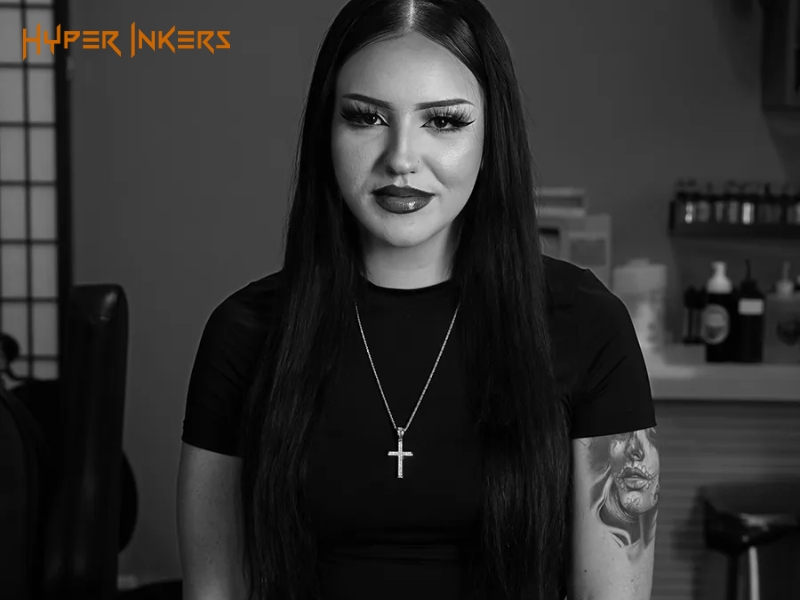
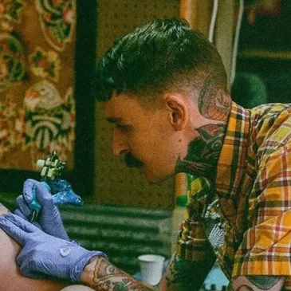

Our Tattooers
At Petal and Thorn, our skilled tattoo artists are dedicated to providing safe and professional tattooing services. Whether you're looking for a classic earlobe tattoo or something more unique like a septum or industrial tattoo, our team has the expertise to ensure a comfortable and hygienic experience. We use high-quality ink and follow strict sterilization protocols to guarantee your safety. Meet our talented tattoo artists below!
Meet Our Tattoo Artists

Natalya
Specializes in: Floral, Traditional

Steve
Specializes in: Geometric, Blackwork, Traditional
Amy
Specializes in: Watercolor, Floral, Traditional